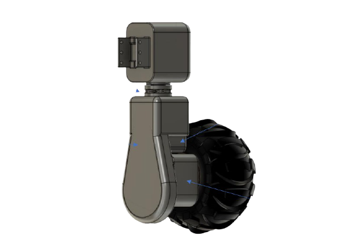
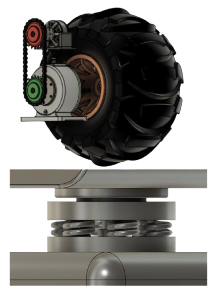
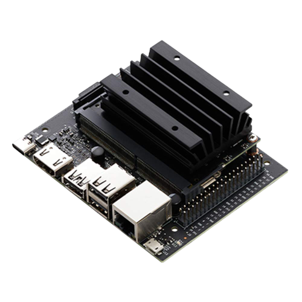
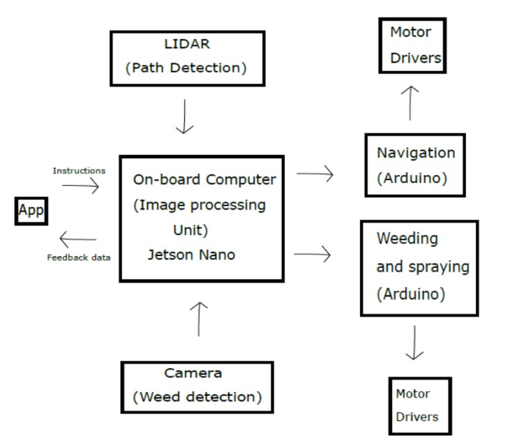
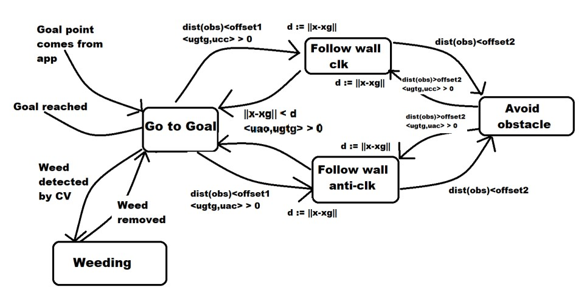

The complete physical structure is broadly divided into 4 major parts
CHASSIS
DRIVE MODULE
WEED REMOVER
SPRAYER
All the 4 modules are explained one by one
Chassis
...
Chassis is the main support structure of the vehicle which is also known as ‘Frame’. It bears
all the stresses on the vehicle in both static and dynamic conditions. In a vehicle, it is
analogous to the skeleton in living organisms. The chassis used in our design is an
integrated form of two different frame with the base being ladder type and the upper body of
a space frame. Ladder Frame: The simplest type of body-on-frame design is the ladder
frame. The frame looks like a ladder, with 2 rails interconnected with
lateral support members.
This is used commonly in pick-up trucks and other commercial vehicles
which deal with rough roads and uneven terrain.
Our choice is justified as:
a) it is simple in design and manufacturing
b) is efficient providing optimum strength as is evident from
their usage in pick up vehicles Space / Tubular Frame: The skeleton in this case is an internal framework of metal tubes.
When compared to a Monocoque chassis (another
chassis type), here the skeleton of the car bears most
of the load.
It is a very popular design for race cars and all-terrain
vehicles like dune buggies.
It will provide strength to the battery casing, is very
efficient under impact testing and crash testing and its
manufacturing is easy as welding requires no expensive stamping presses and jigs. In this
way, our choice is justified.
Drive Module

...
Complete bot is mounted on 4 such
drive modules making our bot a 4-
wheel driven bot
It consists of a DC motor that drives
the wheel through a two-stage
transmission. First stage is the chain
drive and then the in-wheel planetary
gearbox.
Planetary gearbox has following application-
• Transform torque
• Transform speed
Rotation of drive module is facilitated by the
stepper motor which is housed in the case that
is in turn connected with the chassis.
the Stepper case and rest of drive module are separated by a damper

Weed Remover
...
It consisted of a high rpm motor connected with
pair of fibre string / blades of cutter. It is
surrounded by two toothed wheels to uproot
weeds
Bot consist of 2 cutter and 4 toothed wheels
Sprayer
...
Two sprayers are mounted at the back of the bot. It
functions by using an air blower powered by a high
rpm motor. This air helps in suction of spraying
liquid (Bernoulli’s effect) to the spraying nozzle.
Electronics & Control

We propose using Jetson Nano as the onboard computer; this is the main processing unit of
the machine.
It will take in data from various sources, process it and send control signals to
the various actuator modules.
It receives data from the camera and does image processing
to detect the presence of weeds;
it also receives LIDAR data to detect and avoid
obstacles.
This is also where communication to and from the mobile app takes place; using
its wifi module which creates a wifi connection with the mobile app.
...

A GPS module is also connected to the Jetson
so that accurate location data can be sent to
the mobile app. The navigation is controlled by
arduino uno which controls the various motor
drivers required for moving.
The weeding and spraying system is controlled
by another arduino uno. The machine is
powered by powerful 24V, 24 AMH SLA
batteries.
Input will come from the app and will go to the
computer which also receives data from LIDAR
and camera .

Depending on the inputs given the computer will then send signals to the navigation
module (for movement) and spraying module (and spraying). And then will send data from
the computer to the app back.
The Robot’s control architecture for obstacle avoidance follows a Finite State
Machine(FSM) formulation with different behaviours as the corresponding states. The
complete structure is shown,
Go to goal behaviour is when the machine moves in
such a way so as to reach a goal point. Whenever an
obstacle is detected, the machine will follow the wall
of the obstacle so as to move around it and continue
to its goal point. If the machine gets dangerously
close to an obstacle it will go into avoid obstacle
behaviour where it moves directly opposite to the
obstacle. While moving whenever a weed is detected
by the computer vision system, it will go into weeding
behaviour.
APP Dev & AI
Connectivity
...
● The three main components of the plan are: an Android app, Firebase database, and Wi-Fi Module connected to the microprocessor.
● We have planned to establish connection between rover’s microprocessor (e.g. Arduino)
and the user’s android app via firebase real-time DB. Data (like sensors data) stored to a
database can be accessed from anywhere by the internet. Firebase makes storing and
retrieving data easy. It also has lot of feature that can be exploited for a better
experience. We can read and transfer data from your database by Arduino and wi-fi
module. Host name and an Auth key of the firebase project is used to establish
connectivity and authentication . Then, the Firebase Arduino library is added and upload
to the code
The data collecting components collect data in real time from an environment and are interfaced
with the help of a microprocessor like Arduino. The Arduino serially sends this data to wi-fi module
which uploads the data on to Firebase. Once the data is on firebase, it can be accessed from
anywhere in the world with an internet connection of course! So, the android app is connected to
the firebase via internet to send and receive data from the same.
Here, is an example using LED to explain the above
The Android app sends the serial data 1 or 0 to the Firebase database. The Firebase database interacts
with Wi-Fi Jetson and this Jetson acts on the basis of data received from Firebase Database. If Jetson
receives serial data 1, it turns ON the LED, and if Jetson receives serial input 0 then it turns OFF the LED.
Firebase platform has 18 products which are used by 1.5 million apps.
App Features
...
The rover’s live location can be tracked all the time using GPS and intended map.
The map can also be used to instruct the path of rover as and when required during live run
time.
The app will be able to calculate and indicate the following for all the main processes
•Work left
•Time required
•Speed of the bot
Navigation will be kept universal for all process 1.SPRAYING
Spraying has a lot of features and control , the bot with feature the angles
between which the sprays will swing , also the range the sprayer can reach at a
time. Indication of the amount to fluid in the tanks can also be indicated.
Spraying will be featured with scheduling option , like when the spraying must
start and other information. 2.WEEDING
The positions of weeds in the camera feed using Deep learning methods to
assist in the weeding process. It the detected plant is a weed it will be chopped
off.
AI Technology
...WEED DETECTION USING DEEP LEARNING Aim - To find the positions of weeds in the camera feed using Deep learning methods to
assist in the weeding process. Workflow -
The Camera attached at the front of the robot will provide a live feed to the user through
the APP. The App software will run the Detection script and provide the Control module
with the required coordinates. Dataset- In order for Deep learning models to work, we need data. We can find Weed detection
datasets online with many varieties to choose. We can choose a custom weed dataset for
training the model. Script-
• For the preparation of the script, We train a state of the art object detector for the task
beforehand.
• In the Script, we run the inference with the model with the feed obtained from the Camera
on the robot.
• The Script produces Detection boxes for weeds, which after filtering we send to the
Managing software.